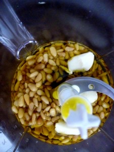
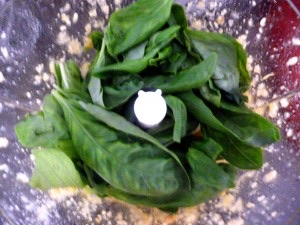
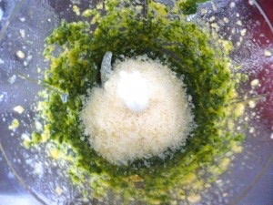

Pesto au basilic

Ici vous trouverez la recette authentique du pesto au basilic !
Le pesto au basilic est clairement ma sauce favorite et vous le retrouverez dans pas mal de mes recettes! Il parfume les bons plats de pâtes avec par exemple quelques tomates séchées mais aussi certains potages, poissons en papillotes etc..
Il existe plusieurs pesto, mais celui-ci reste tout de même le plus « répandu ». Il faudra que je pense à vous poster la recette du pesto de roquette aussi mais surtout celui aux tomates séchées que j’adore également!! Je ne suis qu’au commencement de ce blog et je peux vous dire que j’ai un paquet de recette à mettre ici 🙂 et je prends beaucoup de plaisir à les partager avec vous!
Trop souvent beaucoup le confonde avec le pistou mais attention ce n’est pas vraiment la même chose! Le pesto, est une recette italienne (de Gènes en Italie) à base de basilic, pignons de pins, d’ail, huile d’olive, et pecorino (ou parmigiano) alors que le pistou est composé de basilic, huile d’olive, ail uniquement (certains y rajoutent de temps en temps du fromage mais surtout pas de pignons!) mais c’est aussi très bons!!
Je ne sais pas si je vous apprends quelque chose mais moi j’étais la première à ne pas connaitre les différences alors si ça peut servir à quelqu’un tant mieux!!
Je vous laisse découvrir la recette de mon pesto au basilic afin de mettre un peu de soleil dans vos assiettes et je vous dis à très vite!
Ingrédients
- ail - 1 gousse
- basilic - 1 bouquet
- huile d'olive - 50g
- pignons de pin - 50g
- parmesan - 50g
Instructions
- Dans le bol de votre mixeur mixer l'huile d'olive et les pignons de pin et l'ail
- Ajouter le basilic puis le parmesan et mixer à nouveau
- Mixer jusqu'à obtenir un mélange homogène



Les tips de la communauté
Excellent pesto qui accompagne parfaitement les pâtes. Recette adaptée aux ingrédients disponibles en France (parmesan au lieu de pecorino). Peut être congelé pour une utilisation hivernale.
Astuces
- Peut être congelé pour conserver du pesto frais même en hiver
- Le mixage des pignons prend environ 30 secondes à peine
- Conservation au frigo : 15 jours
- Basil frais indispensable pour la qualité
Variantes suggérées
- Pesto Rosso (avec tomates) - mentionné comme préféré de certains
- Adaptation avec parmesan à la place du pecorino pour facilité d'accès en France
Ajustements signalés
- L'huile d'olive ne cuit pas avec 30 secondes de mixage - aucun problème contrairement à la croyance